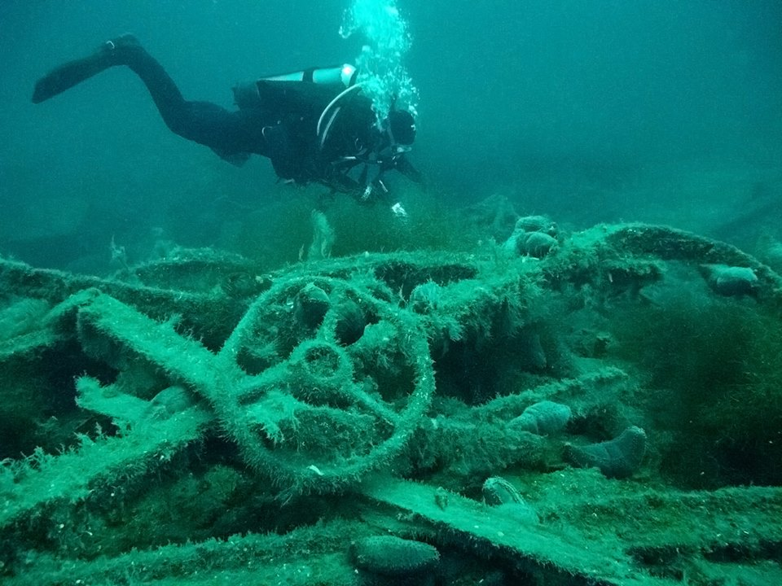
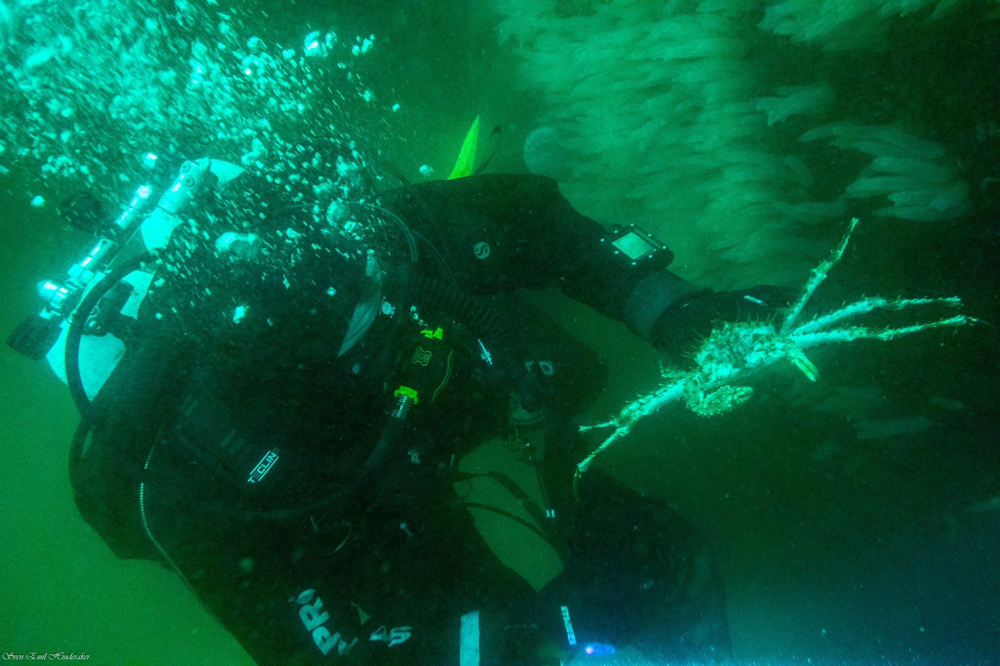
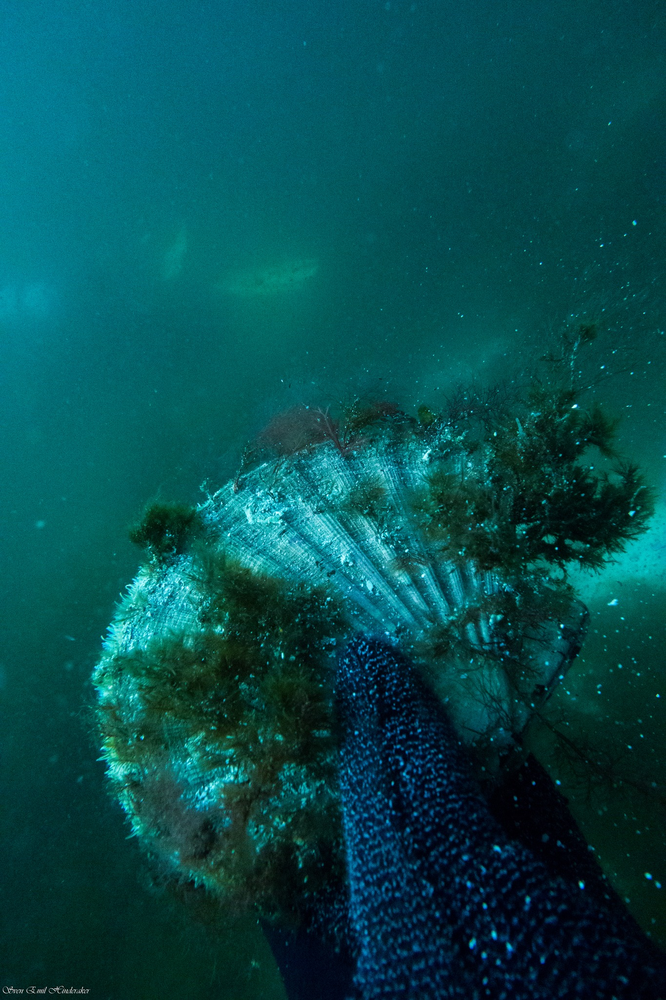
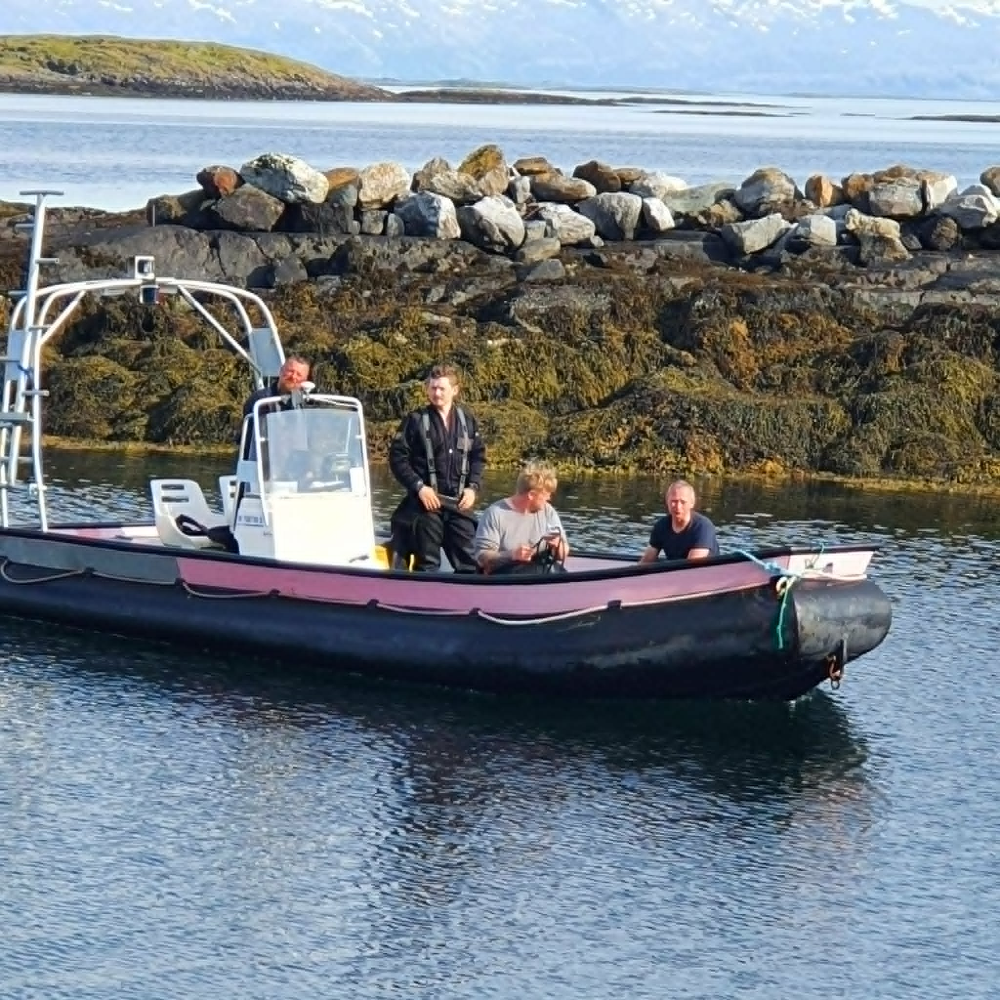
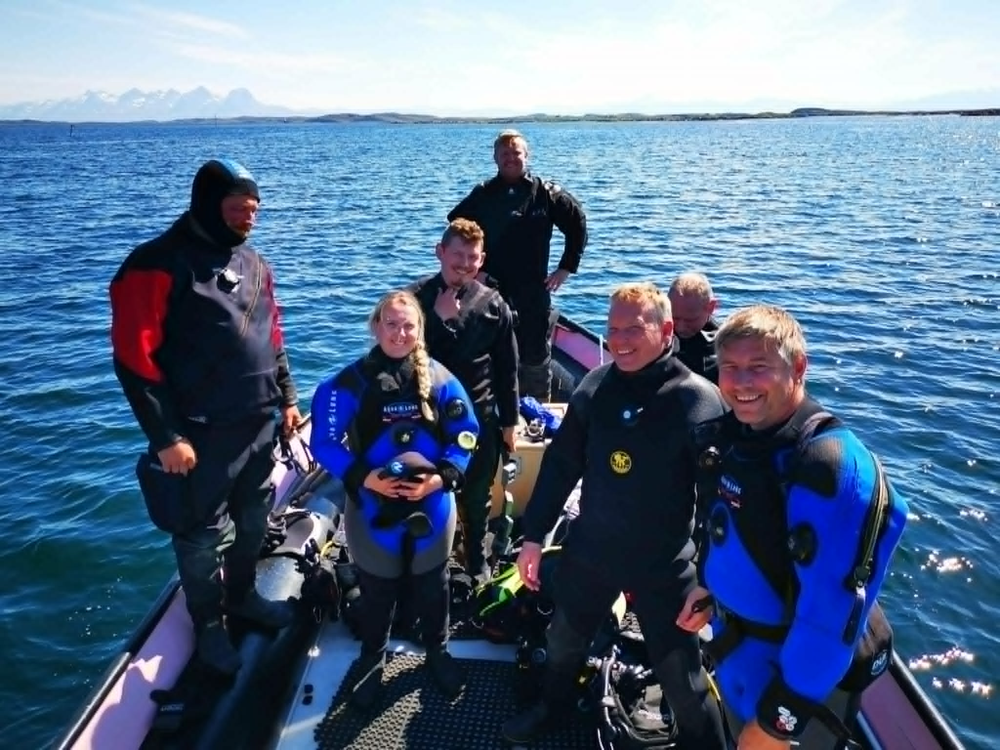
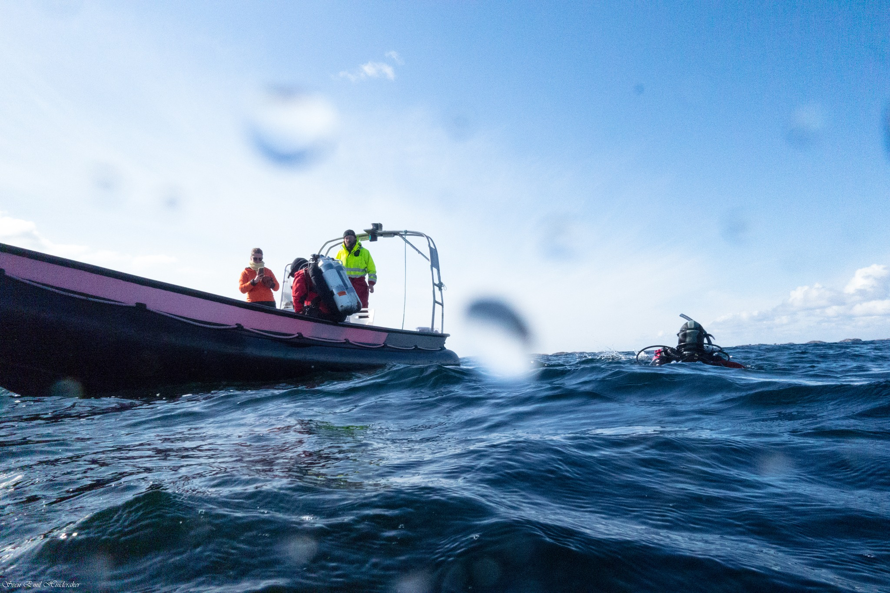

MS Rigel ble senket 27. november 1944 av britiske fly under andre verdenskrig. Vraket ligger i dag ved Rødøy og er et av de mest besøkte dykkestedene langs Helgelandskysten.
MS Rigel was sunk on 27 November 1944 by British aircraft during World War II. The wreck now lies near Rødøy and is one of the most visited dive sites along the Helgeland coast.
Vraket er godt bevart og ligger på rundt 40 meters dybde. De øvre delene er tilgjengelige fra ca. 25 meter, noe som gjør det egnet for erfarne sportsdykkere. Rikelig marint liv har kolonisert strukturen — du finner sjøanemoner, torsk, steinbit og av og til kveite langs sidene.
The wreck is well preserved and rests at around 40 metres depth. Upper structures are accessible from about 25 metres, making it suitable for experienced sports divers. Rich marine life has colonised the hull — sea anemones, cod, wolffish, and occasionally halibut along the sides.
Dykket gjøres typisk fra båt. Klubben arrangerer jevnlige turer til Rigel — ta kontakt for å bli med.
The dive is typically done from a boat. The club runs regular trips to Rigel — get in touch to join.
Rigel er et krigsminne og bør behandles med respekt. Løft ikke gjenstander eller forstyrr vrakets struktur. Anbefalt minimumserfaring: CMAS 2-stjerne eller tilsvarende.
Rigel is a war memorial and should be treated with respect. Do not lift objects or disturb the wreck's structure. Recommended minimum experience: CMAS 2-star or equivalent.




